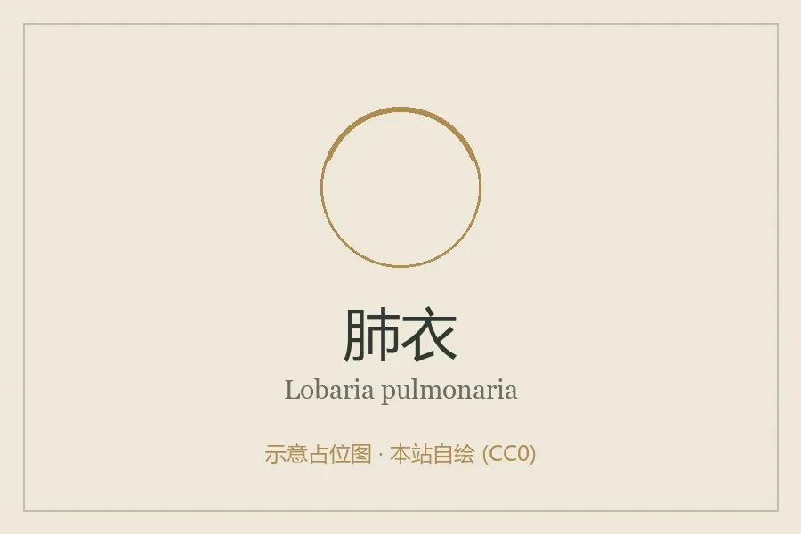

真菌 · 真菌界
肺衣 Lobaria pulmonaria

肺衣科大型地衣，地衣体叶状、表面网状皱褶似肺，生于湿润老龄林，对空气污染极敏感，是珍稀指示种。
- 分类
- 门子囊菌门纲茶渍纲目茶渍目科肺衣科属肺衣属
- 栖息环境
- 湿润老龄林的树干与岩石上，对湿度与空气质量要求高
- 地理分布
- 欧洲、北美与东亚湿润林区，中国西南、东北有分布但已少见
- 保护级别
- 欧洲多国列为濒危或近危；空气污染与老龄林减少是主因
物种志
肺衣的地衣体大型叶状，直径 5–20 厘米，裂片宽大，表面鲜绿至灰绿色，湿润时呈鲜绿色，具明显网状皱褶与凹坑，形似肺脏，背面淡褐至黑褐色，密被绒毛。子囊盘红褐色，生于裂片边缘。地衣体由真菌与藻类（或蓝细菌）共生构成。
肺衣生于湿润的老龄阔叶林与针阔混交林，附生于树干与岩石上，是典型的“老龄林指示种”。它对二氧化硫等空气污染和森林湿度变化极其敏感，在欧洲许多地区已因酸雨与森林砍伐而大幅减少，被多国列为濒危或近危。它含肺衣酸等成分，民间曾用于润肺止咳，但现代不建议自行采食。保护肺衣的关键是保护老龄林与改善空气质量。
形态与习性
- 地衣体大型叶状，直径 5–20 厘米，表面网状皱褶
- 背面淡褐至黑褐色，密被绒毛
- 子囊盘红褐色，生于裂片边缘
- 生境湿润老龄林树干与岩石
- 指示意义老龄林与清洁空气的指示种
- 保护状况欧洲多国列为濒危或近危
趣味知识
- 肺衣表面布满网状皱褶和凹坑，形状像肺，因此得名，古代曾据此认为它能治肺病。
- 它只在湿润的老龄林里生长，看到大片肺衣通常说明这片森林历史悠久、空气清洁。
- 欧洲因酸雨与森林砍伐，肺衣在许多地区已经消失，被列为濒危物种。
- 它含肺衣酸，民间曾用于止咳，但自行采食野生地衣并不安全。